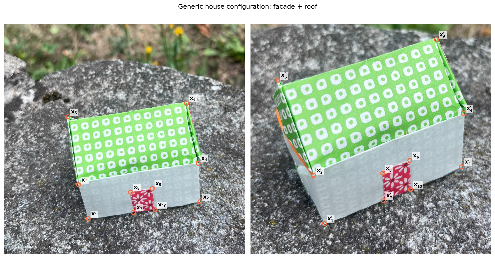
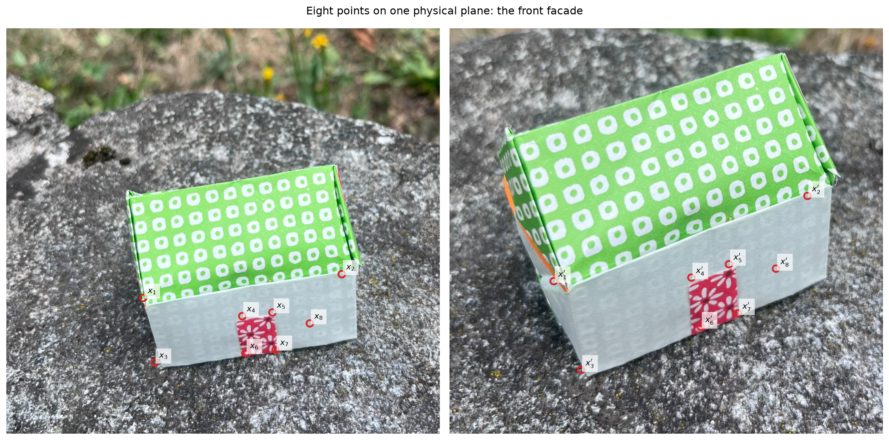
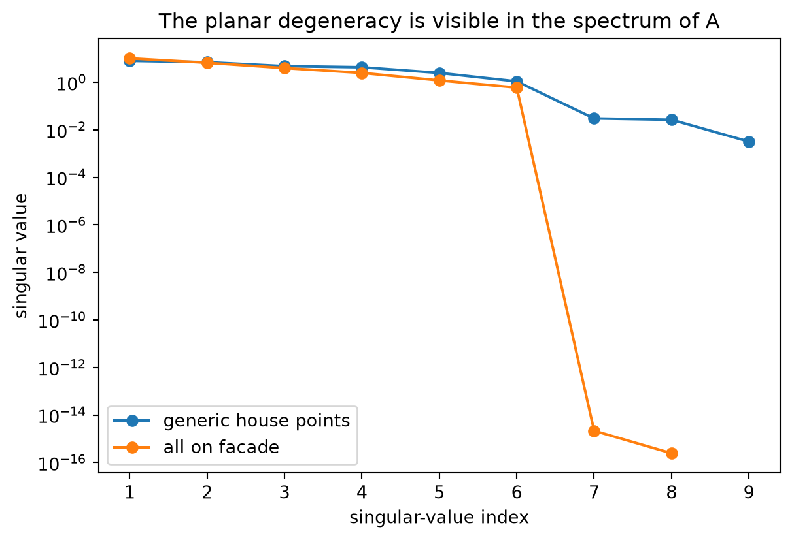
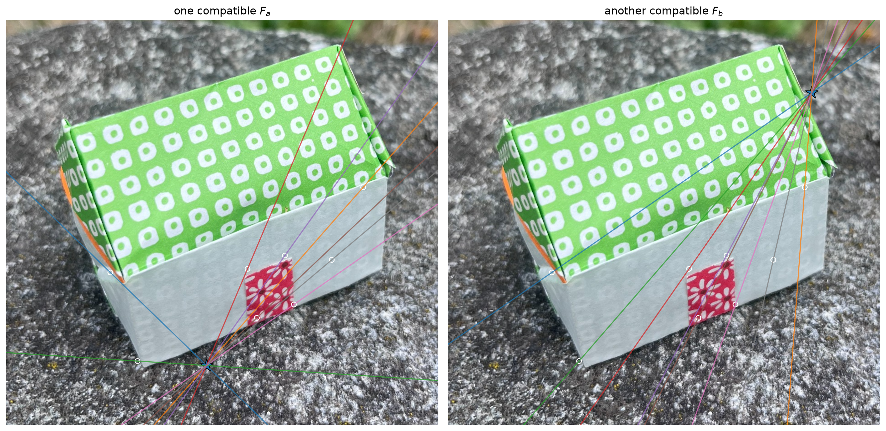
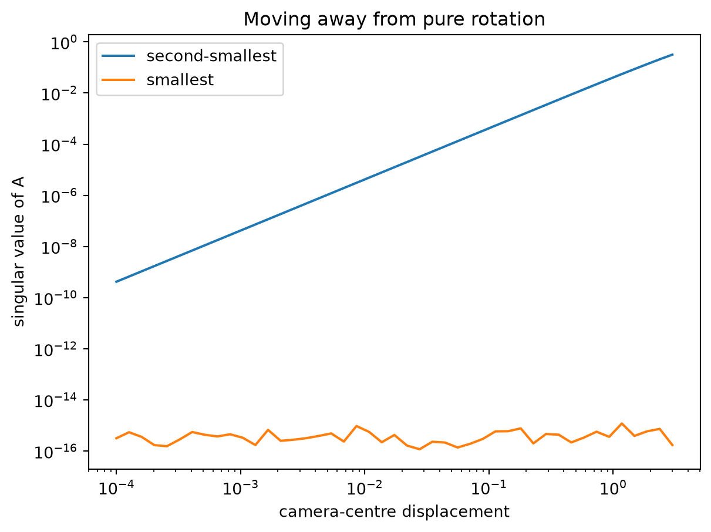

# --- Colab bootstrap -------------------------------------------------------
import sys, subprocess
from pathlib import Path
if "google.colab" in sys.modules and not Path("cv-dojo").exists():
subprocess.run(["git", "clone", "-q", "--depth", "1",
"https://github.com/magrilu/cv-dojo.git"], check=True)
import os
os.chdir("cv-dojo")
for parent in [Path.cwd(), *Path.cwd().parents]:
if (parent / "src" / "cvdojo").exists():
sys.path.insert(0, str(parent / "src"))
break
# --- Imports ---------------------------------------------------------------
import numpy as np
import matplotlib.pyplot as plt
from mpl_toolkits.mplot3d.art3d import Poly3DCollection
from cvdojo.house import load_image, load_model, load_two_view_matches
from cvdojo.plotting import (clip_line_to_image, draw_line_in_image,
pairwise_intersections, show_matches as _show_matches,
ACCENT)
from cvdojo.scene import (skew, look_at, camera_center, project_normalized,
image_plane_world, image_uv_to_world, set_axes_equal)
plt.rcParams["figure.figsize"] = (8, 5)
plt.rcParams["axes.grid"] = False
# --- Data ------------------------------------------------------------------
# Two photographs of the Origami House and eight hand-annotated matches.
# Six lie on the front facade, two on the roof ridge. HZ naming: X is a 3D
# point, x and x' are its projections in the two views.
I = load_image("IMG_4331.jpeg")
Ip = load_image("IMG_4337.jpeg")
H_IMG, W_IMG = I.shape[:2]
x, xp, match_labels = load_two_view_matches()
x_xy, xp_xy = x[:, :2], xp[:, :2]
CROP = (200, 1120, 820, 1700) # region of interest shared by the two views
def show_matches(title="Eight correspondences on the Origami House", ids=None):
_show_matches(I, Ip, x_xy, xp_xy, ids=ids, title=title, crop=CROP)
def plot_line(ax, l, **kwargs):
draw_line_in_image(ax, l, W_IMG, H_IMG, **kwargs)
def line_box_segment(l, width=W_IMG, height=H_IMG):
return clip_line_to_image(l, width, height)
# --- The eight-point algorithm ---------------------------------------------
# These stay in the notebook: they are the subject, not the scaffolding.
def normalize_points(x):
"""Hartley normalization: centroid at the origin, mean distance sqrt(2)."""
c = x[:, :2].mean(axis=0)
d = np.sqrt(((x[:, :2] - c) ** 2).sum(axis=1)).mean()
s = np.sqrt(2.0) / d
T = np.array([[s, 0, -s * c[0]], [0, s, -s * c[1]], [0, 0, 1.0]])
return (T @ x.T).T, T
def design_matrix(x, xp):
"""One row per correspondence, expressing x'^T F x = 0."""
u, v = x[:, 0], x[:, 1]
up, vp = xp[:, 0], xp[:, 1]
return np.column_stack([up * u, up * v, up,
vp * u, vp * v, vp,
u, v, np.ones(len(x))])
def eight_point(x, xp, enforce_rank2=True):
xn, T = normalize_points(x)
xpn, Tp = normalize_points(xp)
A = design_matrix(xn, xpn)
_, S, Vt = np.linalg.svd(A)
Fn = Vt[-1].reshape(3, 3)
if enforce_rank2:
U, s, VtF = np.linalg.svd(Fn)
s[-1] = 0.0
Fn = U @ np.diag(s) @ VtF
F = Tp.T @ Fn @ T
return F / np.linalg.norm(F), A, S
def point_line_distance(x, l):
"""Distance in pixels from a homogeneous point to a homogeneous line."""
return abs(x @ l) / np.linalg.norm(l[:2])
def epipoles(F):
"""e is the right null vector of F, e' the right null vector of F^T."""
_, _, Vt = np.linalg.svd(F)
e = Vt[-1] / Vt[-1][2]
_, _, Vt = np.linalg.svd(F.T)
ep = Vt[-1] / Vt[-1][2]
return e, epWhen eight points are not enough
Eight correspondences do not automatically determine one fundamental matrix. The counting argument only works if the constraints are independent.
We keep the same HZ notation as before: \(\mathbf{X}\) for a 3D point and \(\mathbf{x},\mathbf{x}'\) for its two image projections. The main diagnostic in this notebook is the design matrix \(\mathsf{A}\), not the rank of \(\mathsf{F}\).
1. A generic set on the Origami House
Our eight real correspondences span more than one physical plane: six are on the front facade, while two are on the roof ridge. The normalized eight-point matrix has the expected generic rank.
show_matches('Generic house configuration: facade + roof')
xn,_=normalize_points(x); xpn,_=normalize_points(xp)
Agen=design_matrix(xn,xpn)
Sgen=np.linalg.svd(Agen,compute_uv=False)
print('rank(A_generic) =',np.linalg.matrix_rank(Agen,tol=1e-10))
print('nullity(A_generic) =',9-np.linalg.matrix_rank(Agen,tol=1e-10))
print('singular values =',Sgen)
rank(A_generic) = 9
nullity(A_generic) = 0
singular values = [8.01984131e+00 7.04196298e+00 4.79899279e+00 4.30723268e+00
2.48697178e+00 1.09634374e+00 3.01888906e-02 2.65671114e-02
3.20765840e-03]2. Put all eight points on the facade
Now we deliberately create the critical configuration suggested by the house itself.
The first six measured landmarks already lie on the facade. We fit the facade homography from them, then evaluate that homography at eight facade locations. This removes annotation noise so that the planar degeneracy is exact rather than merely approximate.
For a plane,
\[ \mathbf{x}'\sim \mathsf{H}\mathbf{x}. \]
Then for any chosen epipole \(\mathbf{e}'\),
\[ \mathsf{F}=[\mathbf{e}']_\times \mathsf{H} \]
satisfies all the epipolar constraints. The epipole is therefore not determined by the planar matches.
def homography_dlt(x,xp):
xn,T=normalize_points(x); xpn,Tp=normalize_points(xp)
rows=[]
for a,b in zip(xn,xpn):
u,v,w=a; up,vp,wp=b
rows.append([0,0,0,-wp*u,-wp*v,-wp*w,vp*u,vp*v,vp*w])
rows.append([wp*u,wp*v,wp*w,0,0,0,-up*u,-up*v,-up*w])
Ah=np.asarray(rows,float)
_,_,Vt=np.linalg.svd(Ah)
Hn=Vt[-1].reshape(3,3)
H=np.linalg.inv(Tp)@Hn@T
return H/H[2,2]
# Use the six measured facade correspondences to estimate its homography.
Hfac=homography_dlt(x[:6],xp[:6])
# Eight points, all visibly on the front facade in the first photograph.
xf_xy=np.array([
[480.,1412.], [915.,1360.], [505.,1554.],
[697.,1452.], [763.,1444.], [704.,1533.],
[770.,1526.], [845.,1468.]
])
xf=np.c_[xf_xy,np.ones(8)]
xpf=(Hfac@xf.T).T; xpf=xpf/xpf[:,2,None]
xpf_xy=xpf[:,:2]
fig,axes=plt.subplots(1,2,figsize=(14,7))
for ax,im,pts,prime in [(axes[0],I,xf_xy,False),(axes[1],Ip,xpf_xy,True)]:
ax.imshow(im); ax.scatter(pts[:,0],pts[:,1],s=55,facecolors='none',edgecolors='tab:red',linewidths=2)
for i,p in enumerate(pts):
lab=rf"$x_{{{i+1}}}^{{\prime}}$" if prime else rf"$x_{{{i+1}}}$"
ax.text(p[0]+10,p[1]-10,lab,fontsize=9,bbox=dict(facecolor='white',alpha=.7,edgecolor='none'))
ax.set_xlim(180,1130); ax.set_ylim(1710,820); ax.axis('off')
fig.suptitle('Eight points on one physical plane: the front facade')
plt.tight_layout(); plt.show()
xfn,_=normalize_points(xf); xpfn,_=normalize_points(xpf)
Apl=design_matrix(xfn,xpfn)
Spl=np.linalg.svd(Apl,compute_uv=False)
rankpl=np.linalg.matrix_rank(Apl,tol=1e-10)
print('rank(A_planar) =',rankpl)
print('nullity(A_planar) =',9-rankpl)
print('singular values =',Spl)
rank(A_planar) = 6
nullity(A_planar) = 3
singular values = [1.02159381e+01 6.62739273e+00 3.98299975e+00 2.48955168e+00
1.20259047e+00 5.96744287e-01 2.16174948e-15 2.45399668e-16]fig, ax = plt.subplots(figsize=(7, 4.5))
for S, lab in ((Sgen, 'generic house points'), (Spl, 'all on facade')):
S = np.asarray(S, float)
ax.semilogy(np.arange(1, len(S) + 1), np.maximum(S, 1e-16), 'o-', label=lab)
ax.set_xlabel('singular-value index'); ax.set_ylabel('singular value')
ax.set_title('The planar degeneracy is visible in the spectrum of A')
ax.legend(); plt.show()
This is the key distinction:
In the planar case it is the rank of \(\mathsf{A}\) that drops. A genuine fundamental matrix still has rank two.
The nullspace becomes larger because many different rank-two matrices satisfy exactly the same image correspondences.
3. Two different epipoles, same facade correspondences
We can make the ambiguity visible directly on the second photograph. Choose two different epipoles \(\mathbf{e}'_a\) and \(\mathbf{e}'_b\) and build
\[ \mathsf{F}_a=[\mathbf{e}'_a]_\times \mathsf{H},\qquad \mathsf{F}_b=[\mathbf{e}'_b]_\times \mathsf{H}. \]
Both explain all eight facade matches, but they generate different pencils of epipolar lines.
epa=np.array([620.,1580.,1.]); epb=np.array([980.,980.,1.])
Fa=skew(epa)@Hfac; Fb=skew(epb)@Hfac
Fa/=np.linalg.norm(Fa); Fb/=np.linalg.norm(Fb)
fig,axes=plt.subplots(1,2,figsize=(14,7))
for ax,Fq,epq,title in [(axes[0],Fa,epa,"one compatible $F_a$"),(axes[1],Fb,epb,"another compatible $F_b$")]:
ax.imshow(Ip)
for q in xf: plot_line(ax,Fq@q,lw=1.25,alpha=.75)
ax.scatter(xpf_xy[:,0],xpf_xy[:,1],s=30,facecolors='none',edgecolors='white')
ax.scatter(epq[0],epq[1],marker='*',s=220,edgecolors='k',linewidths=.8)
ax.set_xlim(180,1130); ax.set_ylim(1710,820); ax.axis('off'); ax.set_title(title)
plt.tight_layout(); plt.show()
for tag,Fq in [('a',Fa),('b',Fb)]:
r=np.array([xpf[i]@Fq@xf[i] for i in range(8)])
print(tag,'rank(F)=',np.linalg.matrix_rank(Fq),'max |x\' F x|=',np.max(np.abs(r)))
a rank(F)= 2 max |x' F x|= 1.1102230246251565e-15
b rank(F)= 2 max |x' F x|= 1.5543122344752192e-15Adding more points on the same facade does not resolve this ambiguity. They still obey the same homography.
4. Pure rotation: a homography without a planar scene
A dominant homography does not necessarily mean that the scene is planar. If a camera rotates about the same optical centre,
\[ \mathbf{x}'\sim \mathsf{K} \mathsf{R}'\mathsf{R}^\top \mathsf{K}^{-1}\mathbf{x} \]
for every 3D point, even when the points occupy the full Origami House.
The following controlled experiment uses actual 3D house vertices and keeps the camera centre fixed while changing its orientation.
# 3D structural vertices of an idealized Origami House.
Xh=np.array([
[0,0,0],[5,0,0],[5,3.8,0],[0,3.8,0],
[0,0,2.4],[5,0,2.4],[5,3.8,2.4],[0,3.8,2.4],
[0,1.9,4.2],[5,1.9,4.2]
],float)
K=np.array([[800.,0,512.],[0,800.,384.],[0,0,1.]])
C0=np.array([2.5,-7.,3.0])
R1,t1=look_at(C0,np.array([2.5,1.8,1.8]))
R2,t2=look_at(C0,np.array([3.5,1.5,2.0]))
def project(P,X):
Xh=np.c_[X,np.ones(len(X))]
q=(P@Xh.T).T
return q/q[:,2,None]
P1=K@np.c_[R1,t1]; P2=K@np.c_[R2,t2]
rx=project(P1,Xh[:8]); rxp=project(P2,Xh[:8])
rxn,_=normalize_points(rx); rxpn,_=normalize_points(rxp)
Ar=design_matrix(rxn,rxpn)
Sr=np.linalg.svd(Ar,compute_uv=False)
print('rank(A_pure_rotation) =',np.linalg.matrix_rank(Ar,tol=1e-10))
print('nullity(A_pure_rotation) =',9-np.linalg.matrix_rank(Ar,tol=1e-10))
print('singular values =',Sr)rank(A_pure_rotation) = 6
nullity(A_pure_rotation) = 3
singular values = [5.91710220e+00 5.20316753e+00 3.49232705e+00 2.55783870e+00
9.20889755e-01 5.84594248e-01 1.01653762e-15 2.04909818e-16]So the diagnostic statement is slightly more subtle:
If all correspondences are explained by one homography, two-view epipolar geometry may be underconstrained — but the cause can be planarity, pure rotation, or a configuration close to either one.
5. Near a critical configuration
Exact rank loss is an idealization. In real data we often see its numerical shadow: one or more singular values become very small, and the estimate becomes sensitive to tiny image perturbations.
We start from pure rotation and gradually introduce translation while continuing to observe points on the 3D house.
baselines=np.geomspace(1e-4,3.0,45)
s7=[]; s8=[]
Rbase,tbase=look_at(C0,np.array([2.5,1.8,1.8]))
Pbase=K@np.c_[Rbase,tbase]
q=project(Pbase,Xh[:8])
for b in baselines:
Cb=C0+np.array([b,0,0])
Rb,tb=look_at(Cb,np.array([3.5,1.5,2.0]))
qb=project(K@np.c_[Rb,tb],Xh[:8])
qn,_=normalize_points(q); qbn,_=normalize_points(qb)
sv=np.linalg.svd(design_matrix(qn,qbn),compute_uv=False)
s7.append(sv[-2]); s8.append(sv[-1])
fig,ax=plt.subplots(figsize=(7,5))
ax.loglog(baselines,s7,label='second-smallest')
ax.loglog(baselines,s8,label='smallest')
ax.set_xlabel('camera-centre displacement'); ax.set_ylabel('singular value of A')
ax.set_title('Moving away from pure rotation'); ax.legend(); plt.show()
6. A final trap: \(\det \mathsf{F}=0\) only says rank \(\le2\)
Enforcing
\[ \det \mathsf{F}=0 \]
does not by itself say rank exactly two. Rank-one matrices also satisfy the determinant constraint.
This is the uncomfortable question worth keeping at the end of the notebook:
We force \(\det \mathsf{F}=0\). What guarantees that the solution is a genuine rank-two fundamental matrix?
A useful reading is Sameer Agarwal, Hon-Leung Lee, Bernd Sturmfels, Rekha R. Thomas, “On the Existence of Epipolar Matrices.” It studies precisely when correspondence constraints admit rank-two epipolar matrices and why degrees-of-freedom counting is not the whole story.
Questions to keep
- In the planar example, which rank changes: \(\mathsf{F}\) or \(\mathsf{A}\)?
- Why can infinitely many \(\mathsf{F}\) share the same facade homography?
- Can adding more facade points remove the ambiguity?
- Why does pure rotation create a homography even for a 3D house?
- What do very small singular values of \(\mathsf{A}\) tell us?
- Why is \(\det \mathsf{F}=0\) weaker than \(\operatorname{rank}(\mathsf{F})=2\)?
Further reading
- Maybank, S. J. Theory of Reconstruction from Image Motion, Springer, 1993. Critical surfaces and ambiguous reconstructions.
- Hartley, R. “Ambiguous configurations for 3-view projective reconstruction”, ECCV, 2000.
- Torr, P. H. S., Fitzgibbon, A. W. and Zisserman, A. “The problem of degeneracy in structure and motion recovery from uncalibrated image sequences”, IJCV 32(1), 1999.
- Hartley, R. and Zisserman, A. Multiple View Geometry in Computer Vision, 2nd ed., Cambridge University Press, 2004. Chapter 9 (epipolar geometry) and Chapter 11 (computation of \(\mathsf{F}\)).
- Fusiello, A. Visione Computazionale: tecniche di ricostruzione tridimensionale, Franco Angeli, 2018. Chapter 5.
Luca Magri — Computer Vision Dojo
Code MIT · text and figures CC BY-NC-ND 4.0
https://magrilu.github.io/cv-dojo/